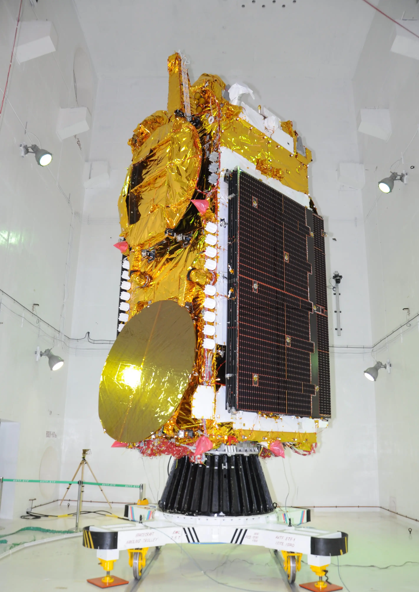
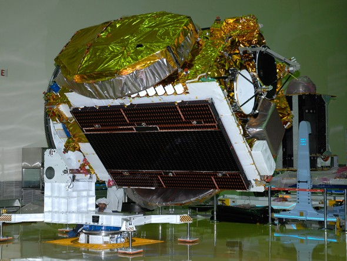
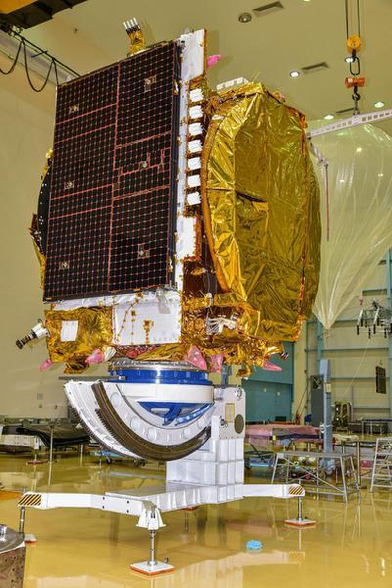
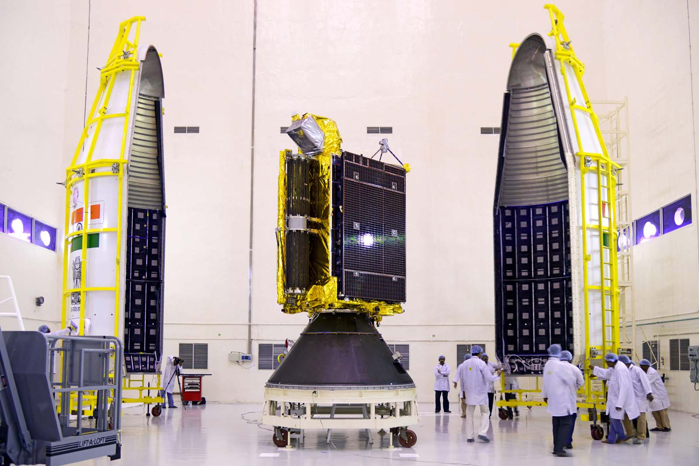

The satellites that run India. Every television broadcast, every telephone call routed over satellite, every weather forecast, every disaster warning — all of it flows through ISRO's GSAT and INSAT constellation. 40+ years. 20+ active satellites. The invisible infrastructure of a billion lives.
Watch: GSAT Launch LiveThe INSAT (Indian National Satellite System) and GSAT (Geostationary Satellite) series are ISRO's communication satellite programmes — a fleet of geostationary satellites that collectively form the communication and meteorological backbone of India. Together they have been operating continuously since 1983, making it one of the longest-running satellite infrastructure programmes in Asia.
These are the satellites most Indians have never heard of — and depend on every single day. The weather forecast on your morning news: INSAT. The television signal reaching a village in Arunachal Pradesh with no cable: GSAT. The disaster warning that reached coastal communities before Cyclone Fani made landfall: INSAT. The telemedicine consultation that connected a patient in a remote tribal area to a specialist in Chennai: GSAT-based ISRO telemedicine network.
Every rupee ISRO spent on these satellites has returned many times over in economic value, lives saved, and national integration achieved — across the most geographically and socially diverse nation on Earth.
The INSAT series began with INSAT-1A in 1982 — which failed. INSAT-1B in 1983 succeeded and became India's first operational multipurpose geostationary satellite, providing TV relay, telephony, and meteorological data simultaneously. It was a revolution: one satellite doing the work that previously required extensive ground infrastructure.
INSAT-1B enabled Doordarshan — India's national television network — to broadcast to remote areas unreachable by terrestrial transmitters. For the first time, a farmer in Rajasthan and a fisherman in Kerala could watch the same news broadcast. India was being integrated culturally and informationally in a way that roads and railways alone could not achieve.
INSAT-2 and INSAT-3 series (1990s–2000s) were entirely indigenous — designed and built by ISRO, unlike the first-generation satellites that were procured from the US. Each generation added capacity, bands, and capabilities. By the time INSAT-3D launched in 2013, India had a world-class meteorological satellite capable of producing images of cyclones every 15 minutes.
The GSAT series, beginning with GSAT-1 in 2001, focused on high-power communication transponders in C, Ku, and Ka bands — enabling direct-to-home television, broadband internet, and VSAT (Very Small Aperture Terminal) networks across India. GSAT satellites are among the most powerful communication satellites in the Asia-Pacific region.
Key milestones: GSAT-7 (2013) — India's first dedicated military communication satellite for the Indian Navy, enabling ship-to-shore and ship-to-aircraft communication across the Indian Ocean. GSAT-7A (2018) — dedicated to the Indian Air Force. GSAT-11 (2018) — India's heaviest satellite at 5,854 kg, with Ka/Ku band transponders providing 16 Gbps throughput for broadband services across India.
GSAT-19 (2017) was the first satellite launched by ISRO's GSLV Mk III — India's most powerful rocket — demonstrating that India could independently launch its own heaviest communication satellites without depending on Ariane or other foreign launchers.
The next chapter for India's communication satellites is Non-Geostationary Orbit (NGSO) — low Earth orbit broadband constellations like SpaceX's Starlink or Amazon's Kuiper. ISRO and OneWeb (now Eutelsat) have an agreement for PSLV launches. India's own startup ecosystem — enabled by IN-SPACe — is developing LEO broadband constellations for Indian connectivity.
The GEO era is not over — GSAT series satellites continue to be vital for television and government communication. But the future of high-speed broadband in India's rural areas will increasingly come from LEO constellations, and India's launch capability and satellite manufacturing expertise position it well to serve that market both domestically and commercially.
Every GSAT and INSAT satellite in geostationary orbit is managed by the Master Control Facility (MCF) — operated from two sites: Hassan, Karnataka and Bhopal, Madhya Pradesh. MCF is distinct from IDSN (which handles deep space): MCF is dedicated to geostationary satellites, performing orbit-raising after launch, station-keeping burns to maintain exact orbital slots, payload configuration, and health monitoring of all communication and meteorological satellites.
Without MCF, India's GEO satellites drift from their assigned orbital slots — and India's DTH television, banking ATM networks, weather forecasts, and disaster warning systems go dark. MCF Hassan has been operational since 1982, predating even INSAT-1B. It is the most critical piece of ground infrastructure in India's space programme that most Indians have never heard of.
Swipe or click arrows to browse. Click any photo to zoom.



